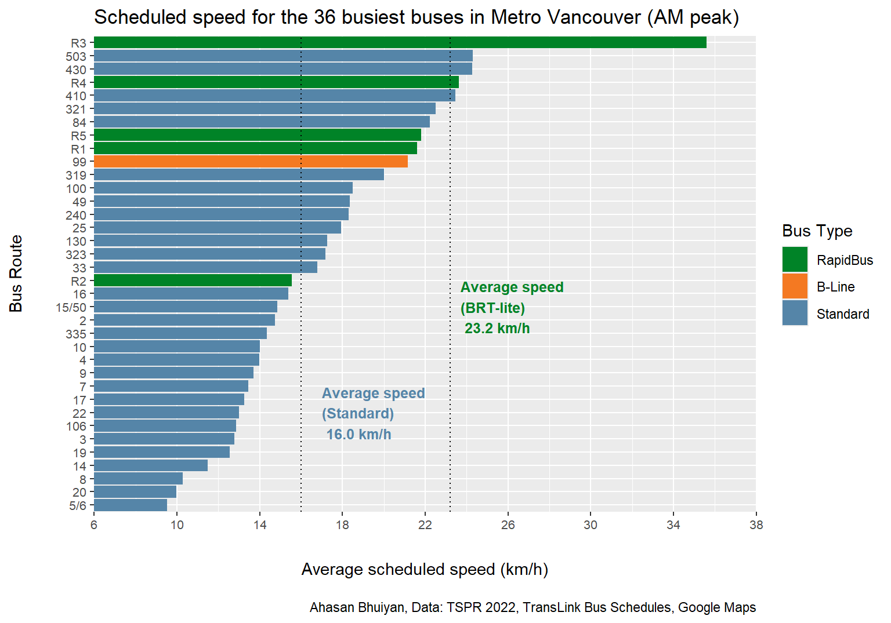
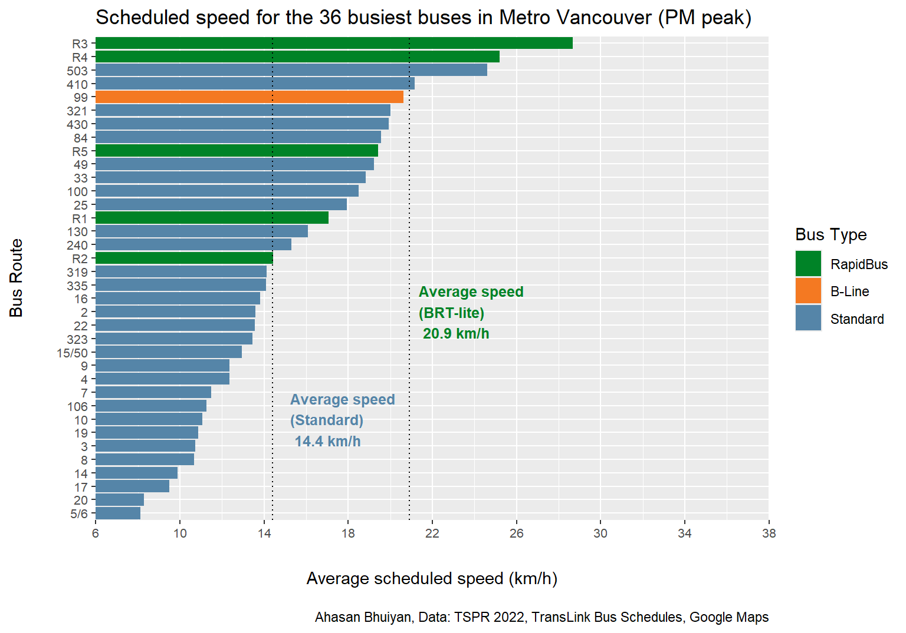
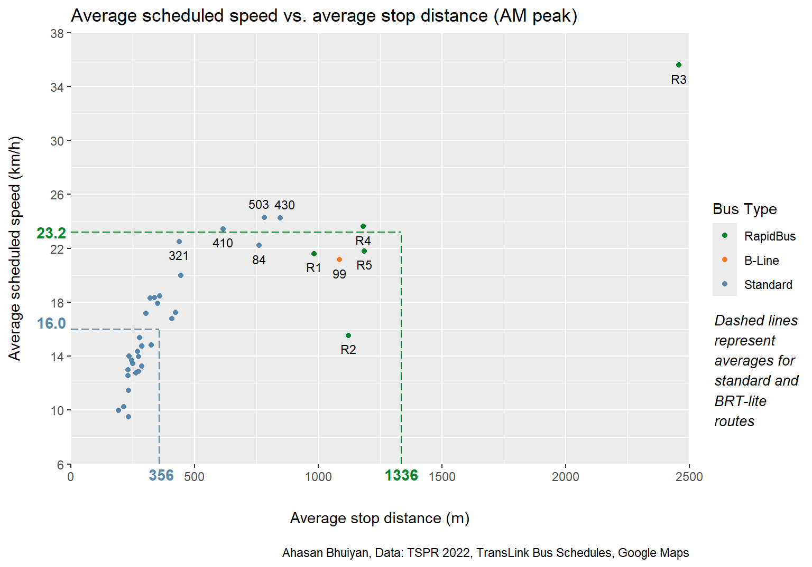
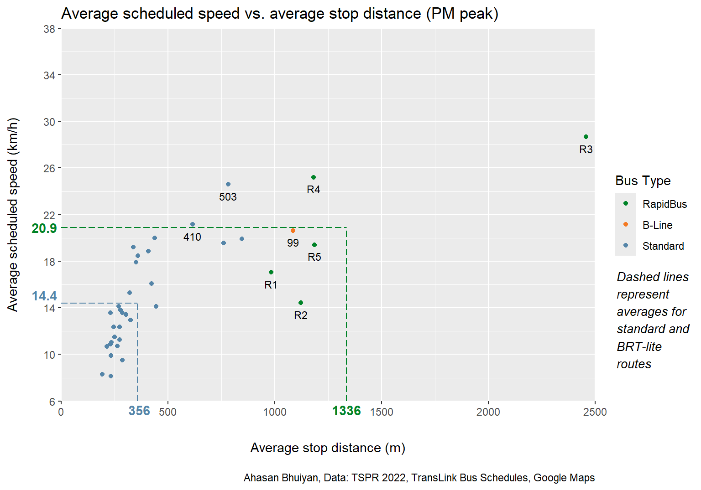

Metro Vancouver Bus Performance Analysis
data
map
transit
Analysis of scheduled bus speeds with respect to stop spacing
Work in progress!
Introduction
One of the keys to enabling a competitive public transit system is speed, and consequently, travel time. Slower speeds may be a symptom of unpredictable service, eroding confidence and pushing people towards alternative modes which save travel time albeit with potentially higher costs.1 Additionally, a transportation option that does not value people’s time deters potential riders away from ever considering it. To achieve ambitious transit modal share targets where the majority of people choose public transportation over personal vehicles, public transit needs to be appealing to those who have the option to drive. In other words, transit travel time needs to be comparable to, or less than, that of driving. This is particularly true for mixed-traffic transit, which has to share its route with other road users.
Within Metro Vancouver, buses serve as the main form of mixed-traffic transit and are mostly divided into three types: standard buses, RapidBuses, and the 99 B-Line. The purpose of this investigation was to find and compare the scheduled speed of these three bus types. An overall trend of stop spacing was identified to explain why bus speeds vary between routes and potential outliers were investigated. To provide some context, comparisons were made to see how Metro Vancouver stacks up against domestic and international counterparts. Finally, a discussion was had about how standard buses can attain better performance through infrastructure and policy restructuring.
Background and Methodology
TransLink is the transportation authority that manages the bus network in Metro Vancouver, through their subsidiary, Coast Mountain Bus Company. The buses primarily fall into the three aforementioned categories of standard buses, RapidBuses, and the 99 B-Line. Other niche types such as highway express and community shuttle routes are grouped into the standard bus category for this analysis.
Bus Types
Standard buses comprise the majority of bus routes in the region and they typically have little infrastructure besides sign poles and possibly a bench at each stop.
RapidBuses are express buses with additional features such as all-day frequency (usually every 15 minutes or better), wider distances between stops, all-door boarding, and real-time displays at bus stops.2 RapidBus routes also feature a mix of bus priority measures (e.g., bus lanes, queue jumps, HOV lanes) for approximately 1/3 of their route.3
Lastly, the 99 B-Line is another express bus route with frequent service and transit priority by means of bus lanes. It serves as both the progenitor for the current RapidBus routes as well as the last surviving example of the B-Line express buses.
Both the RapidBus and the 99 B-Line are characterized as “BRT-lite” routes, having some transit priority measures associated with Bus Rapid Transit, but lacking others, including signal priority and continuous dedicated bus lanes.
Data Sources
The data that was examined for this analysis consisted of the 36 busiest bus routes in Metro Vancouver according to annual boardings in 2022, as found in the Transit Service Performance Review (TSPR) for that year.4 This includes the 99 B-Line, all 5 RapidBus routes, and 30 standard bus routes to provide a decent sample size. For each route, one direction of travel was chosen for inspection, that being the direction TransLink labels as “1”. The scheduled running time, the time it takes to travel from one terminus to another, was collected for both the AM and PM peak periods (around 8 AM and 5 PM) using bus schedules issued in 2023 September.5 Distances were obtained from the 2022 TSPR Bus/SeaBus Summaries6 and validated using Google Maps for accuracy. If there was a large discrepancy of a few kilometres or more, the Google Maps measurement was preferred. Then, average scheduled speeds were calculated using the simple equation relating speed, distance, and time. Finally, the number of bus stops on a particular route was manually tallied from the bus schedules. Please refer to the Appendix for access to the dataset.
It should be noted that while bus schedules account for traffic, but it is certainly not guaranteed that a bus adheres to the schedule. Alternatively, buses may arrive on time, but be at full capacity, thus being incapable of taking on more passengers. While TransLink does release on-time performance metrics, these are not specific to the peak periods, when transit ridership and general traffic is usually at their highest.
Results and Discussion
Standalone Speeds
First, let’s take a look at the dataset of buses in Metro Vancouver sorted by average scheduled speed during the AM and PM peaks.

Perhaps unsurprisingly, the BRT-lite routes are among the fastest in the AM peak, with an average scheduled speed that is 45% faster than the typical standard bus. That being said, the standard deviation for the BRT-lite routes is also greater, being 6.65 km/h compared to 4.24 km/h for standard buses. The wider spread in speeds for the BRT-lite buses is illustrated by the R2 and R3 routes. The R2 is considerably slower than other RapidBuses, being the only one to have a sub-20-km/h average scheduled speed. Conversely, the R3 is the fastest RapidBus by a generous margin, being almost 2 standard deviations above the mean BRT-lite speed and more than twice as fast as the R2.
Additionally, there are 5 standard bus routes that are able to achieve similar speeds to the BRT-lite routes, i.e., punching above an average speed of 20 km/h. The cause for this will be explored in the next section.
During the PM peak, performances are relatively similar, albeit bus speeds across the board are decreased. Both BRT-lite and standard bus routes are roughly 10% slower during this period. Interestingly, however, the standard deviations for both bus categories are smaller as well, being 5.25 km/h for BRT-lite routes and 4.23 km/h for standard bus routes. This suggests that performances are more consistent during the PM peak, though uniform slowness is hardly a result worth celebrating.
Buses like the 5/6, 20, 17, and 14 suffer particularly badly during the afternoon rush, as their average scheduled speeds drop to below 10 km/h. In regards to BRT-lite routes, while the R1 drops below 20 km/h, it still outperforms the R2, which is again slower than the average standard bus.
Regional Stop Spacing Comparison
Bus speeds vary due to a multiplicity of factors, but key among them is the distance between stops, referred to as stop spacing. For any transit vehicle there is a delay associated with each stop. Time is required to:
- Let the bus slow down to a stop and then accelerate again afterwards
- Let passengers board and alight
- Let the bus driver pull over to the curve, possibly lower the vehicle, and then merge back into traffic
While these time delays may seem insignificant at a single bus stop, they accumulate over the total length of a route.7 Closely packed bus stops on a route result in a bus having to remain stationary for a greater proportion of time, thereby becoming slower on average. This phenomenon is present in the Metro Vancouver dataset as well.


Footnotes
https://view.publitas.com/translink/bus-speed-and-reliability-report-2023↩︎
https://www.translink.ca/schedules-and-maps/rapidbus↩︎
https://www.translink.ca/-/media/translink/documents/plans-and-projects/rapid-transit/bus-rapid-transit/brt-attributes-for-metro-vancouver.pdf↩︎
https://www.translink.ca/plans-and-projects/strategies-plans-and-guidelines/managing-the-transit-network#2022-transit-service-performance-review↩︎
https://www.translink.ca/schedules-and-maps/bus-schedule↩︎
https://public.tableau.com/app/profile/translink/viz/2022TSPR-BusSeaBusSummaries/TheWorkbook↩︎
https://www.youtube.com/watch?v=AgKw0bvvgZ4↩︎